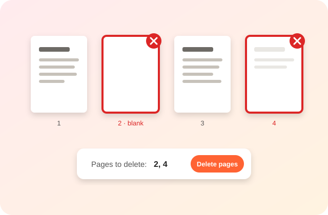

Click the pages you don’t need, or type them, then download a clean PDF. Bookmarks on the kept pages still work.

Click a page to mark it for deletion. Shift-click selects a run of pages.
To delete pages from a PDF free with no sign up, open the file in PDFdukan, click the pages you don’t want or type them, like 2, 5-7, and tap Delete pages. The new PDF is made in your browser.
PDFdukan removes the pages from the file itself, so the deleted pages are not left hidden inside the new PDF. Bookmarks and links on the kept pages still work.
Marks empty pages, including blank scans with light specks, so you can review and remove them.
Selects every second page, handy for scans with blank backs.
Flips your choice, so you can pick the few pages to keep and delete the rest.
| Item | Details |
|---|---|
| Input | One PDF at a time, up to 200 MB |
| Output | PDF with the remaining pages |
No. PDFdukan draws thumbnails with pdf.js and builds the new file with pdf-lib inside your browser tab.
PDFdukan deletes whole pages only. To rotate or reorder pages, use Organize PDF; to save some pages as separate files, use Split PDF. A bookmark that pointed to a deleted page is removed.
Yes. PDFdukan is free, needs no account and adds no watermark. Open the PDF, pick pages and download.
No. Kept pages are not re-rendered or compressed, so text stays sharp and searchable.
Yes, before you download. Click the page again or tap Clear. Your original PDF is never changed.
Yes. Tap pages to mark them, or type page numbers, in any modern mobile browser.
Yes, if it only blocks editing; PDFdukan lifts that in your browser. A PDF that asks for a password to open needs that password.
Usually. The removed pages’ text and images go with them; our 12-page test file shrank from 9 KB to 4 KB.
Connect Google Drive to save selected outputs to your own Drive storage. Review the destination before uploading sensitive documents.
No account? Sign Up free